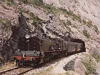

El papa en sus tiempos de Jebi con la banda de white metal CATOLLICA
Esta guía es un camino fácil y rápido para llegar algún día ser un jebi de pro.
Inicialmente la guía del jebi eran panfletos promocionales que se depositaban en los buzones ajenos, para que la gente conociera la religión del jebismo. Más adelante fue rechazado este medio de distribución ya que la publicidad no la leía ni lee nadie.
A continuación se expone una parte de dicha guía:
Conceptos básicos
Apariencia
Déjate el pelo largo. Pero ojo, sólo seras jebi auténtico cuando te llegue como mínimo a media espalda, o sea que mientras te crece (partimos de la base de que llevas el pelo corto), tápatelo con:
- Un pañuelo (a ser posible con algunas calaveras).
- Un sombrero de cowboy, o una gorra militar, o un casco vikingo, o una calavera humana disecada, o la cabeza de Iron Man
- Una gorra de Iron Maiden (sin visera).
NOTA: Se prohíben las viseras, y en general las de marca conocida (Rebook, Mike, Acliclas, etc, etc...)
Cuando los años hayan minado tu abundancia capilar se te permitirá raparte la cabeza mandando una solicitud a Rob Halford a la Parada del Motero (Apartado 08080, Infierno), pero en ese caso debes conservar una indumentaria y un modo de ser que, sin melena, tu Jevidad pueda ser reconocida a unos 15000Km.
Intenta criar una barriga decente, impones mas y encima te dara mas pinta de poderoso (¿Y por que no ponerse cachas? facil. Es mas difícil y la cerveza acabara haciendo su efecto asi que mejor acostumbrate). Si eres un obeso adelgaza un poco, que aunque hayas de tener barriga y el negro adelgace tampoco es cuestion de ser una foca.
Si eres tía ponte una camiseta ajustada a ser posible, triunfa mas; y si estas buena a lo mejor no vuelves a pagar una birra en tu vida.A los machos de tu especie tambien les gustan los culos pero no fofos y gordos como los de las putatoneras y jessis,sino paradito, redondito de unas 35 pulgadas y nunca te quites tus pantalones de cuero (si pudes consiguete uno tan apretado que te duela al caminar), y al igual que los machos de tu especie debes darte de hostias con todas las jessis y perreatoneras que veas.(No desarolles barriga, por favor)
Tira toda la ropa de tu armario (menos la interior, idiota xD o mejor aun! SII!! la interior WRAGH!!!! >=O!). A partir de ahora no llevaras ningún pantalón que no sea elásticos o en su defecto de cuero con tirillas. Luego irás a la tienda o al mercadillo más cercanos y te comprarás camisetas de bandas jebis, según que jebi seas (aunque que quede claro un true debe amar a todos los subgeneros excepto el nu , asi que si eres true compra todas estas, sino tienes pasta pues tu veras como te las arreglas, por que si eres true puedes ser lo que quieras (excepto regetonero, porque si lo haces no querras saber lo que te pasara))
Si eres Saxon.
Si eres Sepultura, otra de Sodom, otra de Destruction y una de Kreator.
Si eres un Iron Savior y una de Primar fear.
Si eres un Symphony X, una de Andromeda y una de Adagio seran suficientes.
Si eres Carcass, una de Napalm Death, una de Deicide, una de Morbid Angel, una de Dark Tranquillity.
Si eres doommetalero: tres de Candlemass, una de Reverende Bizarre y otra de Pagan Altar.
Si eres Satyricon, una Enslaved
Si eres numetalero( mejor dicho, posero pateable): una de Slipknot, otra de Linkin Park, ah si se me olvidaba, esto es para tu futuro como EMO, poser.
Si eres un industrial metalero (los siguientes no son posers, que quede claro) Una de Ministry, otra de Rob Zombie y otra de Rammstein
Ve al mercadillo. O compra a una distribuidora; en las tiendas oficiales sólo hay MIERDAS serigrafiadas de Metallica y Slipknot. Los jevis son conocidos por su vida proletaria, y no vamos a tirar el dinero comprando ropa como unos PIJOS ASQUEROSOS. (Comprobado, en sitios no oficiales la ropa cuesta mínimo 40% menos y es igual de mala).
Calzarás botas. Negras, grandes y con punta de acero o camperas o de piel de cocodrilo del Nilo. Se permite el uso de playeras blancas roñosas, pero como sean de marca Eddie the Great te las insertará por vía rectal. Yo que tú no me arriesgaría.
¿Tienes ya una muñequera de pinchos? No me jodas hombre, ya estas yendo a comprártela. También te la puedes hacer en casa, es un bonito trabajo manual, si no sabes hacerla consulta al presentador de Art Attack. Nos explayaremos un poco hablando de las muñequeras. Sólo hay DOS reglas:
Namber güán: Anchura<5cm = MIERDA
Namber chú: Tachas de plástico igual a ¡¡AAAAAARRRRGGHHH, QUÉ DESHONOOOORRRR, MERECES SER SODOMIZADO POR UN MISIL NUCLEAR!! MIERDA
¿Recuerdas esa cazadora vaquera que tu madre iba a tirar porque tenía más mierda que el palo de un gallinero? Pues ahora puedes aprovecharla. Córtale las mangas y llénala de parches de los grupos mencionados en el punto anterior, en la espalda pondrás un parche grandote de Iron Maiden o de Judas Priest, esto que quede claro, tiene que ser de Iron Maiden o de Judas Priest, porque los hay de mas grupos, pero no son más que aficionados.Los Maiden y los Judas son LOS grupos. Por cierto, antes de ponerle parches y toda la pesca, lávala, por favor. No hay nada más penoso que ir de marrano por el mundo, podrían cofundirte con un hippie sucio o un punk. Da igual si la tinta del tejano pierde color, sólo tienes que preocuparte de encontrar parches buenos (al mismo precio que los malos, la diferencia es si el tipo que te los vende es más o menos estafador) que no pierdan tinta. Está bien un dibujo de la cabeza de Eddie sangrando, otra cosa es si la sangre se puede confundir con vómito por culpa del color.
Sonidos
Escucha esto:
- Porta (el que lo a escrito se acaba de meter un cavezazo (con v) contra el escritorio y a muerto por causas naturales)
- Iron Maiden - "The Number Of The Beast" y toda la Discografia desde el 80 hasta el fin de los tiempos.
- Metallica - "Kill 'Em All", "Ride the Lightning" y "Master of Puppets" (si escuchas el solo de bajo de Cliff Burton 666 veces, Cliff saldrá de la nada y
te violará a ti y a tu hermana dará clases de bajo estupendas)
- Judas Priest - "Judas Rising", "Painkiller", "Breaking the law", "Death", "Electric eye".
- Helloween - "Keeper of the seven keys I & II", y los que quieran oír Power/thrash metal con Kai Hansen berreando que escuchen "Helloween" y "Walls of Jerico".
- Led Zeppelin- "Kashmir", "Stairway to Heaven", "Immigrant song", "Rock and Roll", "Achilles Last Stand."
- Edguy - "Vain glory opera" y "King of fools".
- Accept - "Restless", "Balls to the wall", "Son of a bitch".
- Manowar - "Die for Metal" & "Hail and Kill", "Warriors of the world united", King of Kings
- Kreator - Discografía entera, imprescindibles.
- Sepultura - Chaos AD, Roots, Arise, Refuse-Resist.
- Guns N' Roses - Welcome to the jungle, You could be mine, Sweet Child 'O' Mine, November Rain.
- AC/DC - Highway to Hell, Back in Black, Shoot To Thrill, Let there be rock
- Slayer - "Show No Mercy", "Hell Awaits", "Angel of Death", "Raining blood" (impresindible)y una que otra canción de otro album.
- Korpiklaani - "Happy Little Boozer".
- Ensiferum - "Hero in a dream", "Blood is the pirce of Glory" y "Battle song".
- Megadeth - "Symphony of Destruction", "Wake up Dead", "Peace Sells", "Tornado of souls", "High speed dirt".
- Hammerfall - Crimson Thunder.
- Ozzy Osbourne - "Blizzard Of Ozz", "Mr. Crowley", "Crazy Train".
- Blind Guardian - "Imaginatios From the Other Side", "Valhalla".
- Gigatron - Warrior of the Barrio I, II y III.
- Primal Fear - "Metal is Forever""Armageddon", "Black sun", "Chainbreaker", "New religion", "Sign of fear", "Silver & gold".
- Rhapsody - "Emerald sword".
- Apocalyptica - El primer disco nomas.
- Hevein - Sound over matter.
- Iced Earth- "Birth of the Wicked".
- Saxon-"Wheels of steel", "Heavy metal thunder".
- Exodus - EMPÓLLATE todo el Bonded by Blood.
- Queensrÿche- "Spreading The Disease.Queen of the reich."
- Sodom - "M-16", "Persecution Mania", "Better off Dead" y "Agent Orange".
- Lordi- "Hard Rock Hallelujah."
- Gamma ray- "Heavy Metal Universe" , "New World Order", "Rebellion In Dreamland".
- Black sabbath- Solo cuando estuvo ozzy, y luego saltate todas hasta dio.
- Motörhead- "Ace of spades", "Born to raise hell", "Overkill".
- Mägo de Oz (el que puso esto es un poser muty mierda y lo han matado por causas que se desconocen)
- Scorpions- "Still loving you", "No one like you", Rock you like a hurricane.
- Death - Todos pero todos.
- Cattle Decapitation- Hasta que solo comas carne de cani y creas que las vacas son lindas.
- Obituary - "Slowly we rot", "chopped in half".
- Barón Rojo- Satánico Plan, "Los rockeros van al infierno", "Tierra de nadie"
- Deicide - Empollate todos y cada uno.
- Cannibal corpse - Toda la discografia, imprescindibles ademas que la cancion "Hammer smashed face" es una guia de lo que debes hacer cuando veas a un cani.
- Anthrax- Madhouse.Fistful Of Metal
- Dio- "Holy diver", "We rock", "The last in line", "Killing the dragon", "Push", "Shame on the night", Rainbow in the dark
- Pantera- Walk, "Domination", "Cowboys from hell".
- Stormwarrior- "Defenders of metal"..
- Doro- "Unholy love".
- Carcass- "Heartwork", "Reek of putrefaction".
- Obús- "Va a estallar el obús".
- Deep Purple-"Smoke on The Water", "highway star", "lazy".
- Dream theater-"Metropolis pt2: scenes from a memory" , "Images And Words", "Six Degrees Of Inner Turbulence", "Octavarium"
- Children Of Bodom-"Follow The Reaper","Blooddrunk" y "Something Wild"
- In Flames -"Take This Life", "Trigger", "Colony", "Only for the weak", "The jester race".
- Los Suaves - "Dolores se llamaba Lola", "No puedo dejar el rock", "Preparados para el Rock and roll".
- W.A.S.P. - "I wanna be somebody", "Wild Child", "LOVE Machine", "Chainsaw Charlie".
- Lizzy Borden - "American Metal", "Me against the world", "Tomorrow never comes".
- Raven - "Don't need your money", "All for one", "Walk through fire".
- Twisted Sister - "Under the blade", "Come out and play", "I wanna rock", "We're not gonna take it".
- Candlemass - "Bewitched", "Solitude", "Samarithan".
- Nevermore - "This godless endeavor".
- Mayhem-"Deathcrush"
- Nargaroth-"Black Metal ist Krieg" "Seven Tears are flowing to the river" "The day when burzum killed mayhem"
- Emperor-Consíguete todos sus trabajos, sobre todo el "IX Equilibrium"
- Avantasia-"Another Angel Down","Angel of babylon"(Esto es para powers)
- Death-Todo.
Ahora grábatelos en cintas, póntelos en el walkman o mp3 que te regalaron para tu comunión y escúchalos en la escuela, mientras comes, en los bares, en el súper, mientras duermes, cuando te levantes, etc.
- Todos lo trabajos de Beethoveen, Bach.Si preguntas porque se te aparece el painkiller por detras y te viola con la llanta delantera de su moto.
Dirás
Usa estas frases, hábilmente, cuando no sepas qué decir (o para demostrar que sabes de qué va el rollo):
- "Metal"
- "Larga vida al rock"
- "Lemmy, Cliff Burton y Steve Harris son los mejores bajistas del mundo."
- "Rob Halford es el mejor
cantante gay del mundo."
- "Paul Gilbert, Yngwie Malmsteen y Jason Becker son los mejores guitarristas del mundo."
- "Dave Lombardo es el mejor bateria del mundo."
- "Rob Halford es gay"(no, esto mejor no lo digas, solo aceptalo y callte)
- "Pero el que lo discrimine por eso es mas gay aun"
- "En conclusión: Los únicos que siempre valieron la pena en Metallica fue Cliff Burton."
- "Cliff Burton fue el único que valía la pena de metallica. (RIP)"
- "Yosi es una persona inteligente."
- "Jason Becker es Dios."
- "Lemmy es más Semidios que bajista."
- "Pero Halford es aun más Dios"
- "Pero Cliff Burton es aun mas Dios que los anteriores"
- "Pero Bruce Dickinson es el Dios de todos ellos"
- " Y Kirk Hammet les mea a todos en la cara"
- "Dios creó el Metal, es Gay y se llama Halford. (Inserte gutural)" (a unos testigos de Jehová)
- "Barón Rojo me ponen mogollón."
- "Mi rollo es el rock."
- "El mío tambien"
- "El mío no... no es cierto, si lo es"
- "Esta ronda la paga Obús."
- "Nunca me voy a cortar el pelo."
- "Bon Scott y Randy Rhoads siguen vivos"
- "Yo desayuno, como y ceno cerveza"
- "Mis greñas son sagradas."
- "Necesito una birra."
- "Eres más jebi que cagar cadenas/lluvia de hachas/un bulldozer con tachuelas/montar en la moto de Painkiller."
- "Este finde me traes un murciélago y le corto la cabeza de un bocao a lo Ozzy."
- "Eres más heavy que Satanás en el Infienno." (recalcando la n)
- "Guns N' Roses no es metal"
- "AC/DC TAMPOCO ES METAL!!!"
- "Pero me gusta de todas formas el primer disco"
- "Slash es un engreído de mierda. Pa' guitarrista, tenemos a Dimebag"
- "De mayor quiero parecerme a Eddie."
- "Eddie COGEME!!"
- "UP THE IRONS!"
- "El canto del loco es para nenas y/o pijos."
- "Metallica se cogia a todos los otros grupos cuando estaba Cliff Burton"
- "Master!.....Master!....."
- "Solo hay dos tipos de góticas: las buenorras y las salchichas siniestras/jamón satánico."
- "Dover pa su puta madre"
- "¿Has probado el mata-osos?
- "DragonForce me da ganas de romper cosas"
- "DragonForce quiere matar a sus guitarristas."
- "Ozzy Osbourne nunca debió dejar Black Sabbath."
- "¡¡¡Faitin, faitin, faitin the gourld!!!""
- "Cradle Of Filth son las reinas del pop."
- "Ozzy Osbourne trae material de camino" (los "murciégalos")
- "¿Ozzy? ¿El friki del reality-show?
- "Más Metaaaaaaaaal!."
- "Los jebis somos los negros del rock, aunque nos vacilen follamos mogollón."
- "CAPTIVE HONOUR!, AINT NO HONOUR!!!"
- "Piña de Una!!!!"
- "Hail the Necrowizard!"
- "El mes que viene me pillo la Harley."
- "El único gay con los huevos bien puestos es Rob Halford."
- "Jamás te atreverás a llamar enano a UDO."
- "Ni gordo calvo enano de mierda a Kerry King"
- "Necesito otra birra."
- "Sweating Bullets!!!!!"
- "Dame fuego" (con dos mecheros encendidos quemándote los pezones)
- "El metal lo es todo; escuchen metal regaytoneros de mierda... no mejor no, no lo merecen"
- "Pero yo prefiero mas el black que el heavy"
- "We salute you!!!"
- "Tengo mono de metaaaaaaaaaal"
- "Qué raro metal oyen los punks" (y malo...)
- "Abajo el reggeton!!! es basura!!!"
- "El Metalcore no es metal!!! NI EL Nü!!!!!!"
- "Sully Erna es legal"
- "Los emo son mariquitas sin calzones (te los quitas y te los pones)"
- "Los emo son gays"
- "Los punks parecen gallinas con esas crestas"
- "Yo le gano a un ejercito de Punks."
- "¡Acojona tronco, acojona!¡Lo nuevo de los Judas!"
- "¿Escuchas Tokio gay hostal?¡¡RAAAAARGHH!! ¡MUERTEEEE! (mientras depellejas al emo, le arrancas su craneo y lo arrojas a sus testiculos)
- "VALLLLHALLAAAAAAAAAAAAAAAAAAAAAAAAAAAAA!!!!!"
- "amaras a Jimmy page, Jimi Hendrix y por supuesto a
mi mi
- "Mueran malditos llonas broders!!!!!!!!"
- "
Las los (quien sabe que demonios sean...) jonas brother son la mierda mas grande del planeta (si puedes...desmembralos, desoyalos, cometelos, escúpelos, orinalos, y cagalos mientras escuchas maaaaas meeeetaaaaaal!!!!!)
- "El que dijo lo anterior cuando muera
que será mañana por que me bajo la vieja conocerá a Cliff Burton en el cielo
- "Voy a hacerme un abrigo de piel con los pelos de l@s jonas"
- "Dios era estadounidense, tocaba el bajo y murío en un accidente de autobús (vease Cliff Burton)"
- "Eso no es musica!!!!!!!!!!" (Refiriendote a cualquier genero que no sea metal)
- "Esa banda era mejor en sus inicios" (Se puede aplicar a cualquiera)
- "Amaras al Rock Clásico, sea el que sea"
- "Yo vivo según el código metalero como lo manda la canción rattlehead" (si no la conoces prepearate para tu muerte en 3... 2... 1...)
Dieta jebi
 Un
Jebi come de todo (incluso locomotoras oxidadas)
Los jebis pueden comer lo que les venga en gana, excepto agua bendita (lógico) y ostías consagradas.
Pero de todas formas, los jebis tienen una dieta preferida: Las biblias.Los jebis se reunen para ir de cacería de este alimento siempre que necesitan repostar (son como un bulldozer, así que no repostan muy amenudo) su dosis semanal de sermones: de ahí sacan su odio a la Iglesia (de ahí y de las cruzes NO-invertidas). Este fenómeno se puede apreciar en los siguientes documentales:
Los jebis de caza
Los jebis comen su presa (a merendar!)
Situaciones teórico-prácticas
- Situación: Estás con un gótico hablando de lo último del jebi actual, y de repente cambia de tema, a un tema de que la vida es una mierda y todo eso.
- Acción: Si lleva un canuto se lo cojes y se lo tiras y gritas tope fuerte:
"corta el rollo amargado!!!!!MAAAAAAAAAAAAAASSSSSSSSSSTEEEEEEEEEEEEEEEEEEEEEEEERRRRRRRR!!!!!!"
Nota: Si no lleva canuto le mandas a la puta mierda.
- Situación: Está sonando el "Still loving you" de los Scorpions.
- Acción: Levanta tu encendedor BIC, enciéndelo y pon cara de pena. Si tienes una tía al lado es un buen momento para intentar meterle mano, (si eres tía, es un buen momento para partirle la cara al que te quiere meter mano).
- Situación: Está sonando "Rock you like a hurricane" (la segunda de las dos canciones que te sabes de los Scorpions)
- Acción: Levántate si es que estabas sentado. Sitúate bien firme en el suelo con las piernas bien abiertas en pose fiera. Sacude tu melena (si es que ya te ha crecido) con las manos puedes hacer dos cosas:
- Simular los punteos con una guitarra imaginaria.
- Levantar los puños o hacer cuernos.
Corea el estribillo, es fácil, aquí lo tienes:
"jir aiem taratarara rokiu laik a jurriqueein"
Intenta hacerlo todo a la vez sin parecer estúpido.
- Situación: Suena "Master of puppets" de Metallica.
- Acción: Lo mismo que la anterior situación pero en el estribillo tienes que decir:
"!!!!Master... Master!!!!!"
- Situacion: Un punki te pide fuego.
- Acción: No se lo des, los jebis y los punks nunca han sido colegas. Al enemigo ni agua. Si eres de los valientes, mejor aún, quítale el cigarro/canuto de la boca y pisotéalo mientras gritas
"JUDAAAAAAAAAAAAS!!!!"
- Situación: Te persiguen los colegas del pequeño punk de la anterior situación.
- Acción: Grita mientras corres...
"RAAN TÚÚ DEE JIIIIIILS!!!! RAAN FOOR YOR LaAaAaAIIF"
Después de esto escondete en la primera alcantarilla que encuentres, también valen cubos de basura, no te preocupes.
- Situación: Vas con tus amigotes jebis y un pijo te mira, o lo que es peor: te toca.
- Acción: No puedes quedar mal con tus amigos, así que el pijo deberá recibir un par de Cachetadas bien dadas. Si pasas del pijo quedarás como un cobarde o como un niño mimado vestido de jebi, por lo que debes demostrar tu fuerza bruta.
- Situación: Ha entrado en el garito una tía (perdón, una PIBA) que está buenisima, sin novio, sola y con una camiseta de Iron Maiden.
- Acción: Aparta a todos los neandertales que como tú que se van echar encima de la pobre chica. Si hay un chino-que-vende-rosas cerca, cómprale una y dásela, a las mujeres les gustan mucho las flores, así demostrarás que eres todo un caballero. Ahora pídele al DJ que ponga una balada (el Still loving you como no) y mientras suena dile que te recuerda a un perrito que tenías cuando eras pequeño que fue atropellado por un camión cuando iba a cruzar la carretera para abrazarte, y acto seguido te echas a llorar. Así demostrarás que los heavies también somos sensibles (sensibles pero con huevos).
NOTA: Si esta situación se da después de la persecución de los punks, olvídate de las rosas. Emborráchala hasta que no sepa lo que hace y tenga menguadas sus capacidades olfativas (si eres tía haz como si no hubieses leído esto... y no se lo cuentes a tus amigas... por favor).
Normas del jebi
A continuacion las reglas del jebi mas básicas:
- Debes escuchar Judas Priest por obligación y devoción (incluido el álbum Turbo).
- Rézale a Erik Adams 3 veces al día.
- Mea fuera del wc.
- Di que fue tu hermana.
- Debes corrertela con las dos manos o se te puede quedar la polla doblada a un lado.
- Sé rudo
- Si en algún momento te pica un testículo en público debes rascártelo para demostrar que sigues la regla 6.
- Si eres gay.( eres Rob Halford)
- Rézale a Paul Baloff 3 veces al día.
- No escuches pop-punk, no es punk (esto es la regla 7)
- Debes tararear y tocar con tu "air guitar" cada solo de guitarra que tus oídos puedan llegar a captar
- Nunca se te ocurra seguir con el pie el ritmo de alguna cancion de los jonas brothers...si esto ocurre, la extremidad sera cortada, y tu seras puesto en cuarentena, durante la cual, tendras que escuchar toda la discografia de iron maiden, helloween y judas priest 10 veces también tendrás que memorizar cada solo y rítmica de la canción Six Degrees on Turbulence de Dream Theater y tendrás que ejecutar el solo de Seek & Destroy 700 veces y rezarle y pedirle perdón a Cliff Burton por ofenderlo.
- Para hacer su grabación más incomprensible y por lo tanto más "de culto"(sobre todo si su banda es de Black Metal), usa un cantante que desconozca el idioma en el que canta y asegurese de que al menos 2CDs y 10 canciones suyas esten escritas en alguno de los siguientes lenguajes aceptables:
Escandinavo, Latin, Orco, esperanto, Lombardo, sanscrito, arameo, gótico(así es, es un dialecto propio....o al menos lo era hasta que se terminó la edad media), celta, visigodo, élfico o cualquier otro idioma que sea viejo o muerto o que ni exista pero que se vea muy hostia.
Estas son las reglas no tan básicas pero aun asi debes seguirlas:
- Si has de escuchar punk, sera Punk del bueno (Misfits, Ramones, Sex Pistols, MC5,Siniestro Total, etc.)
- Nunca escuches punk y, ni mucho menos, esos gritos tan horribles llamados OI! para eso ya tienes death metal.
- Si decides saltarte la norma anterior y escuchar punk eres un poser.
- Rézale a Bon Scott tres veces al día.
- Sé auténtico.
- Toda la gente que no es autentica es gay.
- Se severo.
- Se simultáneamente severo y necro si es todo posible.
- Rompe las cosas mientras sigues siendo severo y necro.
- Repite todo lo anterior mientras criticas cualquier tipo de religión organizada.
- Nunca, NUNCA, bajo ninguna circunstancia escuches Peccatum.
- Cuando te pregunten si te gusta Mayhem, di que le gustan los autenticos Mayhem. Maniac es gay
- Rézale a Oystein Arseth tres veces al día.
- Rézale a Kai Hansen 8 veces al dia
- No seas Dani Filth
- Nunca, bajo ninguna circunstancia pronuncies el nombre de Kenny G (Si lo leeíste en voz alta, golpeate la cara)
- No seas Dani Filth
- Rézale a John Bonham tres veces al día (opcional)
- Cuando tu madre te diga que bajes la basura, dile que eres demasiado duro para bajar la basura
- Nunca pronuncies nada como el imbecil de Attila en el De mysteriis dom sathanas
- Sodomiza a cualquier puta virginal.
- Sodomiza cualquier cosa que no sea masculina.
- Asegúrate de que tu disco salga 3 años despues de ser grabado. Asi se convertirá en un disco de culto
- Cuando dudes, grita: true Acoustic Black Metal!!!!!
- Si eso no funciona, unos golpes fuertes de bateria sin venir a cuento rompen cualquier silencio
- Rézale a Dimebag Darrell tres veces al día.
- Escribe en un fanzine de culto, entrevistando a bandas que no conocen ni los autenticos Black Metaleros
- Nunca escribas canciones de menos de 15 minutos de largo y que contengan menos de un adjetivo en el título.
- Vete al bosque...
- y actúa como un troll.
- Para ti, Exhorder y Pantera deben ser las DOS ÚNICAS bandas de groove metal, el resto SUCKS.
- Michael Kiske es un gay vendido. NO QUIERES SER COMO EL
- No seas Mortiis (o Dani Filth). Pero sobretodo no intentes ni siquiera parecerte a K*nn* G
- No uses zapatos blancos después del día de trabajo.
- No hagas las bromas que solamente a tu mama le gustarian.
- No haga bromas.
- Cuando dude, frunza el entrecejo
- No comas pastelitos dulces.
- A los productores de álbumes de Black Metal: si no sangran los oidos al escucharlo, no es autentico!!!
- Cerciórese de que no menos de la mitad de los músicos en su álbum sean musicos de sesion
- Cuando toque en directo, gruña los titulos de sus canciones de forma ininteligible. Asi quien no tenga su disco no se enterara
- Nunca toque en directo.
- Cuando vaya a un concierto, olvide de que el resto no van a mirarle a usted
- Utilice alambre de púas siempre que sea posible. (nota: esto asiste a ser "necro" y "severo".)
- Cuando un falso Black Metalero te pregunte que es el Black Metal, dile algo asi como que es "la esencia del mal en el hombre"; asegúrese de que al terminar la conversacion sigua sin tener ni idea de que es el blackmetal
- Consiga que uno de los miembros de su banda se suicide y diga que es porque estaba asqueado de la comercializacion de la escena
- Reforme la banda con los "viejos miembros" y lance un álbum previsto para producir éxito comercial.
- Cuando el disco fracase, diga que hacer otra cosa hubiera sido menos autentica
- Ten un proyecto paralelo. Asegúrate de que el resto de los miembros de tu banda también tengan proyectos paralelos.
- Complete los huecos en los proyectos paralelos de sus otros compañeros como músico de sesion
- Registre todo en el mismo estudio con el mismo productor, instrumentos, etc
- Cerciórese de que la cubierta del álbum nunca consista en más de tres colores (opciones de color permitidas: gris, negro, blanco).
- Indique al público que su banda es "no-religiosa", asi justifica la palabra "Satan" sobre 400 veces en su álbum
- Nunca lleve zapatos de colores
- Insista en que la música debe nunca progresar
- Nunca diga progreso
- Nunca acabes cualquier cosa que comienzes.
- La palabra hail es el unico saludo apropiado siempre que salude a alguien autentico
- Si se siente especialmente autentico, salude con un Infernal hail
- Todas las insignias deben incluir la escritura ilegible y por lo menos un cruz y/o pentagrama invertidos. Esto es no negociable.
- Al referirse al sexo, diga "ella me abrio su durazno de fuego,cogio mi espada del triunfo hinchda y enrojecida por la sangre y la introdujo en su agujero negro"
- Diseñe el logo de su banda en clase de matemáticas.
- Acepte cada entrevista que le ofrecen... entonces finja que usted realmente no goza el ser entrevistado .
- Disfrute de las peliculas de Star trek
- Espere... omita la anterior (vea regla 5)
- Nunca diga el dia exacto del Armaggeddon. Simplemente diga que se prepare todo el mundo
- Utilice la frase "aspirante a siervo del maligno" siempre que sea posible
- Si encuentra a un miembro de Hecate enthroned, riase de el por no parecer malvado
- Poseer centenares de álbumes, de demos y de bootlegs Black Metal. Escuche aproximadamente 8 de ellos regularmente.
- Rompa una Virgen de ceramica delante de casa de su tio. Huya cuando saque la escopeta
- Prohibido usar emoticonos en internet
- ¿Por qué no está la palabra "Nordica" en su título del álbum todavía!? Pongala!! Aficionados...
- El deletreo de cosas no es necro ni severo
- ¡Norsk Arysk Black Metal! ¡Rahhh!!
- No importa de donde sea, finja ser noruego y por tanto, autentico
- No sea Dani Filth. (pienso que está claro)
- Todos los animales domésticos que usted posee ahora en adelante serán conocidos como "Crucifier". Cualquier animal doméstico que usted posea en el futuro también será conocido como "Crucifier".
- Black Metalero verdadero: "muchos de nuestros himnos oscuros son influenciados por el Tolkien poderoso... ¿Usted no ha leído los trabajos de Tolkien!? Imbecil
- Por cierto, procura no parecerte a Kenny G (ni tampoco decir su nombre) y si puede ser, mejor no intentes averiguar quien es.
- @#%$ estoy hablando conmigo otra vez.
- ¡Norsk Arysk Black Metal! ¡Rahhh!!
- ¡Eso es mejor, furioso con la entrevista!
- Aprende a cantar agudo como Robert Plant y gutural como Max Cavalera. Si eres una tía, imita a Tarja Turunen, a Angela Gossow y a Sharon.
- Aprende a tocar la guitarra, el bajo y la batería a más de 240 ppm. ¡Y cualquier escala, arpegio y canción! Nada se escapa.
- Instrúyete en cuanto a música. Culturízate. La música clásica es la base de muchas canciones de Metal, cualquiera lo sabe. Tienes que adorar a Bach, Mozart, Beethoven (y a Barber y a Albinoni si eres gótico), rezarles y aprender sus obras para cualquier instrumento, sobretodo si es de cuerdas.
- El blues no es nada comparado con el Metal, pero no por ello debes subestimarlo. Aprende sobre el género y luego búrlate de cualquier figura destacada del blues. ¡No nos llegan ni a la suela del zapato!
- Cree cruces invertidas en todos los casos posibles.
- Diga al público que usted es un satanista y agregue que usted está en contacto con un dios noruego pagano
- Meta su pene en el pure de patatas
- No haga referencias a los Beastie boys
- No haga referencias a nadie.
- Satanas.
- Lucifer
- Si es posible, diseñe el título de su álbum de modo que consista en tres palabras totalmente sin relación. Dimmu Borgir son los amos de estas (ejemplos: Enthrone Darkness Triumphant, Spiritual Black Dimensions, Puritanical Euphoric Misanthropia, Godless Savage Garden) y también "Diabolical Fullmoon Mysticism" de Immortal.
- Como sabemos, las mujeres no tienen ningún lugar en el mundo homoerotico del Black Metal, pero si sus amigas quieren salir en el disco, pongales a tocar teclados, hacer coros o alguna chorrada asi
- Nunca forme una banda con su novia, esposa, o alguien alegre
- Váyase a la cama cuando su mama se lo dice
- Si es raro, debe ser bueno. Comprelo
- Por supuesto, que sea lo bastante duro
- ¿Es usted bastante duro para leer esto?
- Consigue cada lanzamiento de Darkthrone. Y no escuches ninguno de ellos.
- Consigue camisetas de bandas que ni ha escuchado
- Procura no ir a Myspace nunca: investiga nuevas bandas por tu cuenta mediante fanzines, foros donde se hable de Metal.
- Utiliza la frase "de culto" siempre que sea posible
- Procure lanzar aleatoriamente la palabra "fuck" en segmentos al azar de las letras de sus canciones.
- Te diré lo que necesita tu album... unas tetas
- ¿Que + quieres saber? Sal al a calle y actúa, soldado del Black Metal!
- Has estado leyendo esto en vez de estar cortando cabezas con tu hacha? Vergonzoso!!!
- dejaras todos lo géneros atrás y solo escucharas jebi, y criticaras pies tras pies asi te guste el genero victima que has de criticar. odia profundamente así no tenga razón para hacerlo.
- Michael Kiske puede tener una excelente voz, pero lo echaron a patadas de Helloween por ser un GAY QUE ESCUCHA POP!!Pronto lo veremos junto a Britney cantando como marica...NO SEAS MICHAEL KISKE!!!
- Los que escribieron lo de arriba tienen razon. Pero el mejor vocalista con la mejor voz del mundo fue, es, y siempre será Lemmy (debes decir esto en cualquier discución sobre vocalistas)
- El verdadero Helloweeen existe cuando estubo kai hansen y la actualidad en Gamma Ray,
- Intenta que tener una ideologia que se contradiga con las letras de tu grupo favorito, no se pa que sirve pero da igual.
- Vivir según la canción Rattlehead (sabes de quien es ¿no? Si no lo sabes eres un poser)
Otras Normas
Las 100 reglas del Death Metal/Grindcore
- Debes ser gore
- Debes ser macabro
- Debes ser demente
- Debes ser obsceno
- Debes ser retorcido
- Debes ser un monstruo
- En su defecto, debes ser completamente anticristiano
- Debes tener mas que claro que tu eres el mas rudo de todos los jebis, asi como el mas entendido en underground
- Debes tener claro, que SOLO te gustan estos 2 tipos de musica, pero tienes acceso permitido a bandas de thrash metal EXTREMO: en plan Kreator, Sodom, Slayer, Dark Angel, Sepultura (old), Possessed, incluso Exodus. Pero Metallica, Megadeth, Anthrax, Iron Maiden, Judas Priest y todas esas cosas, ES PARA MARICONAS.
- Tu lema sera; Si no sale sangre, ES UNA PUTA MIERDA!!!
- Amaras a Death y a la musica de Chuck Schuldiner como si te fuese la vida en ello
- TU ODIAS EL MELODIC DEATH METAL
- Si has de escuchar melodeath, que sea At the Gates o cualquier banda con sonido similar a Dismember, GRUPOS COMO C.O.B. NO GRACIAS
- TU ODIAS EL BLACK METAL
- Si has de escuchar black metal, que sea blackened death metal como Belphegor
- Puedes experimentar con tu musica como hizo Atheist, pero NO como su bajista, que hace LATIN POP ¬¬"
- Si haces death metal tecnico y eres bajista, toca con 10 cuerdas, sino seras un mierdas
- Cuanto menos entendibles sean tus canciones, mas pro seras
- Te haras una paja si ves una portada de Cannibal Corpse
- Prueba a hacer chistes de humor negro, eso demostrara cual macabro llegas a ser
- Anticristianismo win
- Si no eres europeo, olvidate de hacer death metal
- Olvidate tambien de hacer grindcore
- Si haces grindcore, CUANTO MAS RUIDO HAGAS MAS MOLAS!
- Se todo lo rapido que puedas tocando
- ¿Has probado a sacarte la carrera de medicina?
- Si eres Death metalero... estudia una ingenieria.
- Tu como buen grindcorero vestiras tan holgado que podras nadar en tu ropa.
- Hey deathmetalero!!! haz caso omiso a lo anterior.
- Tu ODIAS el Hardcore Punk.
- El Grindcore mexicano es el mejor... lastima... no es europeo, por lo tanto no es bueno.
- Si haces Cybergrind, forzosamente debes ser aleman, sino eres Poser.
- Deberas pronunciar perfectamente Paracoccidioiodomicosisproctitissarcomucosis.
- Tu ideal: Torsofuck.
- En caso de ser Grinder, Deberas Pesar como minimo 250 KG, sino, eres Poser.
- QUE CONTINUE QUIEN QUIERA XD
111 Reglas del Thrash Metal
- Para ser un verdadero "thrasher" tienes que vestir únicamente con vaqueros rajados y zapatillas blancas, si si, blancas, preferiblemente de marca j'hayber, aunque todo ser metalero que se precie viste de negro, tú eres más metalero que todos ellos, puedes permitírtelo.
- Aconsejable también cinturón de balas, ¡Que pinchen coño! Cuanta mas sangre mejor!
- El thrash implica un crecimiento de tu melena en un 300%, esto puede ser hasta las rodillas, pero hasta la cadera también esta permitido, aunque mejor ten cuidado que se te enganchará con las balas
- Bebe Cerveza
- Siempre que puedas
- Cuando no puedas también
- La temática de la que hablaran tus canciones se reducirán a un apocalipsis o la destrucción definitiva de la humanidad, nada de mariconadas de elfos y dragones, el folk epico es música de gays
- De muy gays
- Rezale a Cliff Burton 3 veces al dia
- y/o a Dimebag Darrell
- Minimo
- Hazte con los siguientes discos en CD, vinilo y cassette:
- Metallica: Kill 'Em All, Ride The Lightning, Master Of Puppets y ... And Justice For All
- Megadeth: Killing Is My Bussines... And Bussines Is Good!, Peace Sells... But Who’s Buying?, So Far, So Good... So What!, Rust In Peace y Countdown to extintion
- Slayer: Show No Mercy, Hell Awaits, Reign In Blood, South Of Heaven y Seasons In The Abyss
- Overkill: Feel The Fire, Taking Over, Under The Influence y The Years Of Decay ( overkill creo el thrash)
- Testament: The Legacy, The New Order, Practice What You Preach y Souls Of Black
- Exodus: Bonded By Blood, Pleasures Of The Flesh, Fabulous Disaster e Impacct Is Inminent
- Anthrax: Fistful Of Metal, Spreading The Disease y Among The Living
- Dark Angel: We Have Arrived, Darkness Descends, Leave Scars, Time Does Not Heal
- Death Angel: The Ultra-Violence, Frolic Through The Park y Act III
- Annihilator: Alice In Hell y Never, Neverland
- Destruction: Infernal Overkill, Eternal Devastation, Release From Agony y Cracked Brain
- Kreator: Pleasure To Kill, Terrible Certainty y Extreme Aggression
- Sodom: Persecution Mania y Agent Orange
- Tankard: Zombie Attack
- Exumer: Possessed By Fire y Rising From The Sea
- Exhorder: Slaughter In The Vatican y The Law
- Pantera: Cowboys From Hell y Vulgar Display Of Power
- Escúchalos desayunando
- Escúchalos comiendo
- Escúchalos durmiendo
- Escúchalos mientras
follas duermes
- Escúchalos mientras follas con la novia
de tu amigo
- Escúchalos hasta que al discman o cualquier cacharro que tengas le salgan llamas, que es más heavy que cualquier variante del metal.
- Ten por tablas de la ley el "Sentence of Death" y el "Thrashing Like A Maniac"
- El Black Metal es ruido
- El ruido es malo, pero malo de cojones
- Pero no duele en los oídos
- Tú no quieres ser Black Metalero, así que retuerce todo pezón que se cruce en tu camino
- Si alguna vez haces una versión de Metallica, tienes dos opciones: o que sea una canción de los 80, de los primeros discos o ser Lars Ulrich y arriesgarte a ser abierto en canal
- No seas Lars Ulrich
- Tú NO eres gay, eso es para los simpatizantes del black metal
- El nombre de tu grupo debe ser "Massacre", "Bloodrain" o cualquier nombre que implique un derramamiento de sangre
- También valen nombres con órganos humanos, como por ejemplo Stomach Creeper, también queda heavy.
- No te llames en tu puta vida “Madderica”, “Carbunco”, “Jaguar” o “Megamuerte” aparte de ser plagio, queda de puto culo.
- Si alguna vez te haces una foto asegúrate de que se nota lo larga que tienes la melena, que no se distinga el color de tus ojos y de que de fondo tengas el infierno.
- Tus video clips también serán en el puto infierno, o en una fabrica abandonada, o en mitad de el desierto, un cementerio o un sitio heavy o bien muy cutre
- En tus conciertos asegúrate de que llevas tus zapatillas blancas y de que tras finalizarlos, tomas un par de hectolitros de cerveza
- De la buena
- ¡Pero sin pasarse! ¡No seas pijo!
- Heineken esta bien
- Heineken esta de puta madre
- Pero Guinness es mejor
- A falta de estas consuma Carlsberg
- Considerar que Steve Vai es un Dios con el permiso de San Chuck
- Reconocer la musica angelical de Joe Satriani
- Pero recuerda que están por debajo del Thrash
- ¡¡Jeinequen la ostiaaaarghh!!
- La cerveza no da resaca, el headbanging tampoco, las dos cosas juntas… puede
- Haz headbanging a menudo para tener una buena flexibilidad cervical
- Toques el instrumento que toques, escupe al suelo del escenario, pero no al público, con un Marylin Manson tenemos de sobra.
- ¡¡NO seas Lars Ulrich!!
- Tus guitarras serán BC Rich o Dean siempre, pero una Jackson sacaojos o una ESP/LTD de Dave Mustaine están permitidas.
- La distorsión de los Marshall es el mejor invento del mundo desde la cerveza y el sexo, que se inventaron a la vez y en fecha desconocida.
- Dos palabras: ¡PALM MUTE!
- Si eres chileno, di que los dos mejores frutos culturales que ha dado tu país son Pablo Neruda y Tom Araya
- Si eres bajista jodete, no se te va oír aunque toques con el BC Rich más caro del mundo.
- Ni aunque fueses el puto Lemmy, con su verruga enorme
- Ni aunque tuvieses sus DOS verrugas descomunales
- Si eres batería tienes que tener una Tama o una Pearl con DOS bombos. El resto de marcas son para los mariquitas, como en el power metal. Aprende a hacer los dobles bombos a la velocidad de una metralleta para amenazar al publico
- Literalmente, tienes que trinchar los oídos del publico de la misma manera que lo harías con la cabeza de un pijo.
- Dave Mustaine es Dios(en teoria...pero para que ariesgarse)
- Cliff Burton fue Dios
- Dimebag siempre será Dios… a su manera
- Lars Ulrich no es Dios, y por el amor de Slayer, ¡¡no seas Lars Ulrich!!
- Adora a estos dos hombres y de paso al Ángel de la Muerte que vendrá para inundar el mundo de sangre. ¡¡SANGRE!!
- Las calaveras molan, adóralas también
- Consigue un par de cientos de calaveras, en camisetas, anillos, posters, banderas, pinta tu instrumento con calaveras, las paredes de tu habitación, también, tatúate calaveras, siempre
- Si tienen pinchos en plan Motörhead mejor que mejor
- ¿A estas alturas tendrás un par de tatuajes no? ¿No? ¡¡Eres una maricona!! ¡Se van a reír de ti!
- Para evitar risas, ahora te tatúas toda la espalda, los dos brazos y los gemelos, en plan K. King
- Y el cuello tambien, y si te estas quedando calvo, por las partes de las calvas tambien.
- Con calaveras varias, claro
- Por el amor de Cliff!, deja partes del cuerpo sin tatuar, ¡¡hay cosas que no queremos ver!!
- Además tatuarse ciertas partes del cuerpo es de gays…
- Como en el power metal: ¡A saber donde se tatúan los dragones y los elfos los frikis esos!
- Nunca saques una portada de tu disco con una foto tuya, los infieles podrían reírse de tus zapatillas, que asombrosamente siguen siendo blancas, ¿¿porque siguen siéndolo verdad?? ¡Lávalas ostia!
- Nunca te pintes la cara, el black metal es ruido. Ruido malo
- Nunca te pongas mascara, Slipknot dan pena, sobre todo las dos hectáreas que tiene Joey Jordison en la frente, ¡¡ahí cabrían dos piscinas!!
- ¡¡Por lo menos!!
- Ama la música de Mustaine, pues a elegir.
- Gruñe siempre que puedas
- No sonrías, eso es de poperos, tu enseña los dientes, que para algo los tienes
- No concedas ninguna entrevista si no hay cerveza
- Mucha cerveza
- Pega al entrevistador si se pasa de listo por preguntar porque no te has puesto las zapatillas para la entrevista
- ¡Si osa criticar tu estilo, es que no escarmienta, es un infiel, a por el!
- Buen consejo es dejarle atado mientras te subes a la mesa donde te estaba entrevistando mientras le mojas las preguntas con la cerv… ¡¡sangree!!, ¡no malgastes la cerveza que te puedas beber tu!
- ¡¡Gruñe coño, gruñe!!
- Jode bien al vecino con tu música o con tu instrumento
- o las dos cosas a la vez
- Cuidado con tus hobbies! Podrías ser tachado de friki
- Y por tanto de Powermetalero
- Los Warhammer son de frikis
- Los roles también
- Odia al Glam, incluidos a Mötley Crüe y a Poison
- Odia al punk, los punkos son los únicos que profanan la cerveza juntándola con el vino
- ¡Y tienen el valor de no vomitar después de beber semejante brebaje!
- ¡Odia el Power, abusan de teclados, mariconas!
- Rechaza cualquier cosa que sea menos dura que el Painkiller, ¡mariconaas!!
- Si escribes una balada asegúrate de que tiene 4 guitarras distintas
- …A la vez
- y que la letra sea de la destrucción inminente o de un suicidio
- suicidio colectivo
- Y doloroso, muy doloroso
- Que no falte sangre. ¡¡SANGREE!!
- ¡¡NUNCA OLVIDES LA PUTA VIOLENCIA HOSTIAAAAA!!
- Mejor no hagas baladas. Nunca
- En este punto descubres las botas New Rock, que también es un calzado tan heavy como el infierno
- Te encuentras ante una duda existencial profunda, pides 5 préstamos distintos a bancos para poder pagarlas… por si acaso
- Descubres que te molan más tu mierda de zapatillas blancas
- Lleno de ira sales en busca del entrevistador infiel toca pelotas para hacerle tragar tus N Rock
- Pilla parches, miles de ellos para coserlos a un chaleco vaquero de color NEGRO; así contrastan con tus zapatillas, que anteriormente eclipsaron a las N Rock por causas desconocidas
- Si no sabes coserte los parches, lígate a una que lo sepa hacer
- Aunque sea fea, nadie dijo que esto fuera fácil
- ¡¡Cuando te haya cosido los parches no huyas de ella!, tú gruñe y enseña los dientes para que huya ella de ti
- Sino huye pégala con el cinturón de balas pero no estropees tus zapatillas, sorprendentemente blancas todavía
- Cruza medio país para ver a Megadeth, Metallica, Sodom, Slayer o Annihilator. Ya nunca veras a Pantera
- Creo que me pase de numeros, em, emmmmm..............MASTER, MASTER...
- Olvida que el thrash esta parcialmente inspirado por el punk...carajo...olvida lo que acabas de escuchar...que lo olvides!!!!!!
- Deberás odiar al reGAYtón y A Dadi Yonki sobre todas las cosas !!!!!!!!!!(Regla indispensable para todo Jebi)
PD: Que Trash Metal signifique literalmente “basura metal” no significa que tengas que ser chatarrero, ¡gañan!. ¡Tú eres un nuevo dios del nuevo heavy metal!!! -- Contestación: inútil, no se escribe trash sino THRASH que significa rugido/azote, el que puso eso ha cometido un error de principiante, no es un True Thrasher, (mega) muerteeeeeeeeeeeeeeeeeeeeeeeeeeeeeeeeeeee y (symphony of) destruccion!!!!!!!
PD2: Insisto: ¡¡¡¡NUNCA SEAS LARS ULRICH!!!!
PD: Iba a borrar la semejante atrocidad de escribir trash y no thrash. Pero viendo que ya lo corrigieron, lo dejo como está.
PD3: Además, ya que estamos en la corrección de que el trash metal no puede existir (el metal nunca es basura a no ser que sea profanado por un reguetonero o un bakala o Lars Ulrich), daré un poco de información sobre qué significa THRASH METAL, para que puedas vacilar a cualquier gilipuertas que no sepa donde se escriben las haches...
Thrash significa golpe o azote, y este nombre se le da a cierta vertiente de Hard Rock que empezó a principios de los 80. Se caracteriza por tener los ritmos más rápidos y muchas veces difíciles, las baterías y las guitarras atronan con una fuerza acojonante, las voces son duras, fuertes y tanto pueden ser agudas como graves... pero el bajo rara vez se oye. ¡Por eso entronizamos tanto a Cliff (entre otras cosas)!
PD4: Saltaron los kiwipedistas. TUUUUU!! Intento de tHrasher!! Dave Mustaine, Kerry King, Cliff Burton, Scott Ian y Dave Lombardo. Y punto. Eso es thrash.
Si quieres una idea más concreta, escucha los grupos anteriormente recomendados. Y olvida esa mierda que dice en la Kiwipedia que la primera canción de Thrash es esa de Queen... Stone Cold Crazy. ¿QuéE? Si te gusta Queen, es una cosa, pero no te fíes de las versiones que pueda hacer Metallica en sus días de Garage. Y tampoco en la Kiwipedia, que ya sabemos que tiene la fiabilidad allá donde Cristo perdió el mechero.
101 Reglas de un Black Metalero
- No seas alegre.
- Se autentico.
- Toda la gente que no es autentica es alegre.
- Se severo.
- Se necro.
- Sea simultáneamente severo y necro si es todo posible.
- Rompe las cosas mientras sigues siendo severo y necro.
- No te diviertas en los conciertos. Estate parado alrededor con los brazos cruzados.
- Repite todos arriba mientras que denuncias la religión organizada en cualquier forma.
- Nunca, NUNCA, bajo ninguna circunstancia...
- ... escuche Peccatum.
- Cuando le pregunten si le gusta Mayhem, diga que le gustan los autenticos Mayhem. Maniac es gay
- No hagas cosas divertidas, excepto quemar iglesias
- No seas Dani Filth
- Nunca, bajo ninguna circunstancia pronuncie el nombre de Kenny G
- No seas Dani Filth
- Cuando tu mama te diga que bajes la basura, digale que eres demasiado duro para bajar la basura
- Nunca pronuncies nada como el imbecil de Attila en el De mysteriis dom sathanas
- Sodomiza a cualquier puta virginal.
- Sodomiza cualquier cosa que no sea masculina.
- Asegurate de que tu disco salga 3 años despues de ser grabado. Asi se convertira en un disco de culto
- Cuando dudes, grita: true norwegian black metal!!!!!
- Si eso no funciona, unos golpes fuertes de bateria sin venir a cuento rompen cualquier silencio
- Dale la vuelta a cualquier cruz que encuentres
- Retorcer pezones no es una actividad black metalera
- Escribe en un fanzine de culto, entrevistando a bandas que no conocen ni los autenticos black metaleros
- NUNCA seas abierto de mente
- Nunca escribas canciones de menos de 15 minutos largos y que contengan menos de un adjetivo en el título.
- a) Maquillate b) Vete al bosque c)Actua como un troll.
- No seas Mortiis (o Dani Filth)).
- No uses zapatos blancos después del día de trabajo.
- No hagas las bromas que solamente a su mama le gustarian.
- No hagas bromas.
- Cuando dudes, frunza el entrecejo
- No comas pastelitos dulces.
- A los productores de álbumes de balck metal: si no sangran los oidos al escucharlo, no es autentico!!!
- Cerciórate de que no menos de la mitad de los músicos en tu álbum sean musicos de sesion
- Cuando toques en directo, gruña los titulos de sus canciones de forma ininteligible. Asi quien no tenga su disco no se enterara
- Nunca toques en directo.
- Cuando vayas a un concierto, olvida de que el resto no van a mirarte a ti
- Utiliza alambre de púas siempre que sea posible. (nota: esto asiste a ser "necro" y "severo".)
- Cuando un falso black metalero te pregunte que es el black metal, digale algo asi como que es "la esencia del mal en el hombre". Asegúrate de que al terminar la conversacion sigue sin tener ni idea de que es el blackmetal
- Consigue que uno de los miembros de su banda se suicide y diga que es porque estaba asqueado de la comercializacion de la escena
- Reforma la banda con los "viejos miembros" y lanza un álbum previsto para producir éxito comercial.
- Cuando el disco fracase, di que hacer otra cosa hubiera sido menos autentica
- Ten un proyecto paralelo. Asegúrate de que el resto de los miembros de tu banda también tengan proyectos paralelos.
- Completa los huecos en los proyectos paralelos de tus otros compañeros como músico de sesion
- Registra todo en el mismo estudio con el mismo productor, instrumentos, etc
- Cerciórate de que la cubierta del álbum nunca consista en más de tres colores (opciones de color permitidas: gris, negro, blanco).
- Indica al público que tu banda es "no-religiosa", asi justifica la palabra "Satan" sobre 400 veces en su álbum
- Nunca lleves zapatos de colores
- Insiste en que la música debe nunca progresar
- Nunca digas progreso
- Nunca acabes cualquier cosa que comiences.
- La palabra el hail es el unico saludo apropiado siempre que salude a alguien autentico
- Si te sientes especialmente autentico, saluda con un Infernal hail
- Todas las insignias deben incluir la escritura ilegible y por lo menos una cruz y/o pentagrama invertidos. Esto es no negociable.
- Al referirse al sexo, di que "ella me abrio las puertas del infierno"
- Diseña el logo de tu banda en clase de matemáticas.
- Acepta cada entrevista que te ofrecen... entonces finje que tu realmente no gozas el ser entrevistado .
- Disfruta de las peliculas de Star trek
- Espera... omita la anterior (vea regla 1)
- Nunca digas el dia exacto del Armaggeddon. Simplemente di que se prepare todo el mundo
- Utiliza la frase "aspirante a siervo del maligno" siempre que sea posible
- Si encuentras a un miembro de Hecate enthroned, riete de el por no parecer malvado
- Poseer centenares de álbumes, de demos y de bootlegs Black Metal. Escucha aproximadamente 8 de ellos regularmente.
- Rompe una Virgen de ceramica delante de casa de tu tio. Huye cuando saque la escopeta
- Prohibido usar emoticonos en internet
- El deletreo de cosas no es necro ni severo
- ¡Norsk Arysk Black Metal! ¡Rahhh!!
- No importa de donde seas, finje ser noruego y por tanto, autentico
- No seas Dani Filth. (pienso que está claro)
- Todos los animales domésticos que posees ahora en adelante serán conocidos como "Crucifier". Cualquier animal doméstico que poseas en el futuro también será conocido como "Crucifier".
- Black Metalero verdadero: "muchos de nuestros himnos oscuros son influenciados por el Tolkien poderoso... ¿ no has leído los trabajos de Tolkien!? Imbecil
- @#%$ estoy hablando conmigo otra vez.
- ¡Norsk Arysk Black Metal! ¡Rahhh!!
- ¡Eso es mejor, furioso con la entrevista!
- Crea cruces invertidas en todos los casos posibles.
- Di al público que eres un satanista y agrega que estás en contacto con un dios noruego pagano
- Mete tu polla en el pure de patatas
- No hagas referencias a los Beastie boys
- No hagas referencias a nadie.
- Satanás.
- Lucifer
- Si es posible, diseña el título de tu álbum de modo que consista en tres palabras totalmente sin relación. Dimmu Borgir son los amos de estas
- Como sabemos, las mujeres no tienen ningún lugar en el mundo homoerotico del Black metal, pero si sus amigas quieren salir en el disco, pongales a tocar teclados, hacer coros o alguna chorrada asi
- Nunca formes una banda con tu novia, esposa, o alguien alegre
- Vete a la cama cuando tu mama te lo dice
- Si es raro, debe ser bueno. Comprelo
- Por supuesto, que sea lo bastante duro
- ¿Eres bastante duro para leer esto?
- Poseer cada lanzamiento de Darkthrone. Escucha exactamente ningunos de ellos.
- Posee camisetas de bandas que ni has escuchado
- Utiliza la frase "de culto" siempre que sea posible
- Procura lanzar aleatoriamente segmentos al azar de las letras de sus canciones (especialmente los que contengan tacos)
- Para hacer tu grabación más incomprensible y por lo tanto más "de culto", coje un cantante que desconozca el idioma en el que canta
- Te diré lo que necesita tu album... unas tetas
- ¿Que + quieres saber? Sal ala calle y actua, soldado del balck metal!
- Has estado leyendo esto en vez de estar cortando cabezas con tu hacha? Vergonzoso!
101 Reglas de un Power Metalero
- El usar indumentaria de cuero quedó atrás junto a Saxon. La seda y el acero es lo nuevo.
- Si lo que vas a hacer es una mezcla de géneros, el Power Metal siempre va a ser el género dominante (ejemplo: "blackened Power Metal" . Esto abarca mucho ya que el Power Metal es infinitamente más épico que los otros estilos, pero también porque “empowered death metal" sonaría estúpido.
- Nadie en el mundo es mas afortunado por tener un género musical que asesina y canta un himno violento rememorando a aquellas almas valientes antes de saltar hacia una batalla con sus muebles.
- Aunque no sepas nada de política internacional, tú podrás escribir historias acerca de relaciones internacionales entre reinos fantásticos.
- Por “relaciones internacionales, ” quiero decir “guerras.” Nadie querrá saber nada de himnos forjados en acero majestuoso acerca de embargos comerciales o tratados de libre comercio con Estados Unidos.
- No seas como Michael Kiske.
- Cuando des entrevistas, asegúrate de mencionar que tus influencias musicales incluyen a Thor.
- Los temas abiertamente religiosos son una mala idea. Hacer canciones extremadamente vagas del “destino, ” “tiempo, ” y otros efectos metafísicos es mas viable.
- Relanza tu catálogo entero con nuevos bonus track en Japón. Luego haz pagar el triple por un álbum que ya tenemos pero que incluya un lado B y el cover de una canción de Helloween.
- Si piensas hacer un cover (de Helloween) de alguna canción de “Pink Bubbles Go Ape” o “Chameleon, ” hazle un favor al mundo y muere.
- La pirotecnia es épica. Asegúrate de llamarla “Aliento del Dragón”.
- NOTA RESPECTO A LA PIROTECNIA: No te prendas en fuego como James Hetfield. Un verdadero templario o guerrero metálico puede jugar con fuego sin quemarse.
- Incluye la mayor cantidad de vocales en el nombre de tu banda como sea posible. Preferiblemente llama a tu banda igual que el nombre del reino mágico del que cantas.
- Gettysburg no era un reino mágico. ¡Qué Lástima Jon Schaffer!
- Nombrar a tu banda Spinefarm, Nuclear Blast, or Steamhammer no te dará un contrato pero te podría poner en el ojo del huracán de la Internet...
- ...y una carta de desistimiento...
- ...o una demandada legal por plagio de nombre...
- ...A pesar de que podrían tener buenas introducciones. “El legendario hijo del trueno dantesco rey del ritmo, Steamhammer, en el bajo!”
- No seas como Michael Kiske.
- Las fotos para la promo vienen en dos tipos: vistiendo playeras y viéndose malhumorados o ardiendo en la gloriosa luz del universo, sosteniendo espadas en alto y vistiendo túnicas reales.
- Los videos musicales deberán ser grabados en la nieve (esto no va para las bandas brasileñas, ellos podrán grabar videos en vivo, o en sus caóticas ciudades)
- Insistimos: deberías ser grabado en la nieve para hacer videuchos musicales.
- y si es que esto se vuelve problemático, graba los videos en un almacén, en el bosque, en un cuarto lleno de agua o en Japón.
- No seas como Michael Kiske.
- Odiaras la banda dragonforce , llamala frikiforce, nintendoforce, los odiaras por poseros y ser la mancha en el power metal
- ¿Para quién tocas?: Por el rey, por tu patria, por las montañas, por los verdes valles donde los dragones vuelan, por la gloria, el poder de ganar sobre el señor de la oscuridad.
- Tienes derecho a escribir un álbum basado en una película de fantasía de los ochenta. ¿Por qué no hay una serie de álbumes conceptuales de “Wilow” aún?
- Sonata Arctica no es “ice metal.” Power Metal es la descripción más poderosa que se le peude dar a una banda; no es necesario debilitar al power haciendo un nuevo subgénero.
- ESP y Jackson serán tus proveedores de guitarras.
- Como nadie te patrocinará...
- Nunca cambies. Una secuela debería sonar igual que su predecesor.
- Paso uno: Lonas y taparrabos de piel.
- Paso dos: Montañas.
- Paso tres: Vive como bárbaro salvaje. Vive en completa armonía con la naturaleza, mata para comer, y permite que el poder de la llama del dragón arda en tu corazón.
- Si ahora ya sientes el poder de la llama del dragón ardiendo en tu corazón, te recomiendo a Tums.
- La narración es una buena manera de llenar esas partes de tu saga épica que suenan mejor en prosa que en una canción.
- Contrata a un narrador competente, aunque...nadie lo haya hecho aún, salvo Rhapsody con Christopher Lee.
- ¡¡¡No!!!, Christopher Lee no trabajará en tu álbum, alcanza un poco de fama y tal vez así el viejito escuche tu propuesta…
- Helloween es el Padre.
- Rhapsody es el Hijo.
- Tolkien es el Espíritu Santo.
- No seas como Michael Kiske.
- Martilla cual metralla tu batería hasta hacerla añicos (no literalmente, por supuesto).
- Np toques tus canciones tan rápido como puedas porque así haras mierda como Dragonforce es, por ende, la banda mierdera posible
pero al mismo tiempo un vil fraude para poseros, odiala
- Piensa en un nombre épico para tu género más o menos como este: Extremo Operático Asesina Dragones sinfónico Melódico Épico Heavy Power Metal de las Fantásticas Guerras de los Dioses de Finlandia.'
- Tú no tocarás llanamente 'Power Metal.'
- Hansi es Dios.
- En tus líricas vas a usar siempre la palabra “farewell” en lugar de “goodbye, ” o ”bye.”
- Necesariamente en tu banda van a cantar: en el Reino Encantado nadie rapea y ni los duendes ni los trolls tienen voces guturales.
- Aunque los Orcos hacen un excelente papel de vocalistas invitados para poder gruñir.
- Stratovarius, Helloween y Iron Maiden deberán estar enlistados como tus influencias.
- Escucha el álbum “Nightfall in Middle Earth” de Blind Guardian todos los días.
- No todo el power consiste en lo epico, no se equivoquen
- Si ves toda la saga y sus extensiones una y otra ves, te puedes considerar épico…y desempleado.
- Lee El Señor de los Anillos cada mes o dos.
- Y el Silmarillion.
- Para tus clases de literatura, haz como tu trabajo final a una especie de híbrido entre las interpretaciones de Tolkein y Blind Guardian.
- Asegúrate que todos pienses que eres gay: Armadura, ropa de lona y cara pintada (NO corpse-paint) te ayudarán. Para un modelo ideal, busca fotos de Ronnie James Dio, el hombre más asombroso en la historia del metal.
- Definitivamente tú NO eres gay.
- Independientemente que seas o no seas gay [lo cual no lo eres] tus fantasías se basarán entre Tuomas Holopanien y Tarja Turunen.
- Las canciones de amor tienen cabida dentro del Power Metal, pero tienen que tratar de un amor épico que involucre dragones o demonios muertos y llenos de esperanza.
- No harás canciones acerca de sexo, eso no es épico.
- Oceanborn fue mucho mejor que Once.
- Los gritos agudos están permitidos siempre y cuando se trate de llantos de batallas épicas.
- No hagas videos musicales decentes.
- Tus fanáticos quieren que tú hagas videos decentes con escenas de batallas.
- Pero ellos siempre se desilusionarán, aunque aprecian el hecho de la inclusión de un dragón de 15 metros en tus conciertos.
- Las camisas con encajes rizados son épicas.
- Aunque no tan épico como el correo cadena.
- Aunque estaría ya demás mencionarlo, compón únicamente en inglés, el Power Metal en otros idiomas simplemente no cuaja, si no me creen, escuchen Tierra Santa.
- La regla anterior no se aplica a Avalanch, en los discos "Llanto de un Héroe" y "El Angel Caído". Aparte de eso, si no es en inglés, simplemente no cuaja
- Tu postura en el escenario debe reflejar actitud de “esta noche vamos a parrandear como en 1599.”
- No hagas distinciones entre tu vida cotidiana y tu actuación en el escenario. Llevando tu espada en público llamarás poderosamente la atención y obtendrás muy buena publicidad para tu próximo álbum, “Orgul Silverleaf, Orc Hunter: the Epic Quest, Volume XIII.”
- La velocidad es asombrosa, así que usar en la batería el doble pedal doble bombo para exagerar la velocidad de tu música no iría mal, pero no hagas mierda como dragonforce, eso es de posers
- No hay límite de velocidad en el Power Metal. Es aún mas asombroso empezar lentamente para luego acelerar la música de 0 a 200 km/h en 0, 6 s.
- Los thrasher criticones son poseros
- Compra constantemente discos nuevos en Ebay y en mercadolibre.com, de preferencia discos Importados o realizados únicamente para Japón; aunque sea el mismo álbum que podrías conseguir fácilmente en la tienda donde compras tus discos, simplemente un disco con una canción rara mas es aún mas épico.
- Tú no tienes un club de Fans, tú tienes un ejército.
- No, en serio, ellos también tienen espadas.
- La banda que asesina unida, permanece unida, a menos que se asesinen entre ustedes, pero no hay problema, Varg Vikernes no hace Power Metal, ademas como power-metalero no te da el valor para asesinar, no es épico.
- Insípidamente interrumpe tu balada con un odioso solo de guitarra fuerte y completamente libre. Lo que mataría la canción en otros géneros, en el Power Metal es necesario para despertar a los templares que hayan caído en el desgraciada pero tentadora vía del sueño.
- Tu álbum ocupará la máxima capacidad del disco. Tú no has dado el suficiente honor a tu rey al menos que hayas compuesto una saga de 78 minutos en su honor.
- Si caes en la cuenta de que no puedes componer casi 80 minutos de solos avasalladores y armonías que arrancan los testículos, puedes dejar una inexplicable pausa sin ninguna interpretación al final del disco.
- No seas como Michael Kiske.
- Por el rey, por tu patria, por las montañas, por los verdes valles donde los dragones vuelan, por la gloria, el poder de ganar sobre el señor de la oscuridad, buscarás a la espada de esmeralda.
- Nunca hagas giras en los Estados Unidos.
- Di que nunca girarás en los Estados Unidos por problemas de pasaporte, cuando enrealidad sabemos que no queremos estar cerca de la nación que originó a Garth Brooks.
- Asegúrate que tu banda sea en realidad una sola persona que hace a otras personas tocar su música. Tus modelos a seguir deben ser Luca Turilli y Timo Tolkki.
- No seas un Timo Tolkki.
- No hagas mercancía decente, tus logos se ven bien en tus álbumes pero en tus camisetas se ven de culo.
- Las mujeres únicamente cantan, no pueden tener otro rol en la banda, esto es lamentable, ya que ellas son las únicas en el grupo que deberían lucir bien con pelo largo (si no me creen, miren a Fabio Lione)
- Si se te fueron las ideas para componer tu séptimo álbum, regraba tu primer demo.
- Cuando asistas a un concierto de Power Metal, por favor deja tu espada en la recepción.
- Después de tanta cerveza con los bárbaros, “Breakfast with Cthulhu (Desayuno con Cthulhu)” suena como una buena idea para un álbum conceptual.
- Tarja es tu amor platónico a menos que seas gay, lo cual ya esta sobreentendido que no eres.
- Tus trabajos para el resto del mundo deben incluir el artwork original, o fotos de tu guitarrista (o tuyas, si tú eres el guitarrista) viéndose como un idiota en las presentaciones en vivo, para mayor referencia, chequen a Raffael Bittencourt, a Felipe Andreoli, mas bien dicho, a Angra completo en el DVD del “Rebirth World Tour”.
- Algunas bandas hacen ambiguamente Power Metal y son categorizadas como ‘speed metal’ o llanamente ‘heavy metal.’ Mientras puedas disfrutar de ellas, si no son Power Metal, no podrán acompañarte en el día de campo.
- Y por ‘día de campo’ quiero decir “correr entre los árboles del bosque tomando sus espadas mientras cantan sus lamentos eroicos…perdón, heroicos de batalla en búsqueda de un duende.”
- Piensa en “hermandad.” Y por favor, recapacita en la idea de comer a tus compañeros de banda (Ver regla 74).
- Compón intros para tus discos, esto significa “un minuto de teclados que gradualmente suenan más fuerte.”
- El límite de canciones instrumentales debería ser una por álbum. Esto es primordial ya que dichas canciones estancan la linealidad de la historia, a menos que tu guerrero Nórdico tenga que probarse a sí mismo en un concurso de cantar a la tirolesa contra el señor de la oscuridad, en este caso realmente necesitas escribir una nueva historia.
- Si estás desesperado por una rareza en tu álbum, haz un cover de Iron Maiden.
- Si estás realmente desesperado por una rareza en tu álbum, haz un cover de Scorpions.
- Los álbumes dobles son épicos, desafortunadamente es difícil que los dos discos sean buenos.
- Si dudas de la calidad de templar de algún colega tuyo, dile que mencione todos los proyectos y grupos en los que Alex Holzwarth haya participado. Sí él no puede nombrarlos a todos, comienza una búsqueda épica de discos para salvar a tu colega de la dimensión maligna desprovista de Power Metal.
- Si tu madre insiste en maquillarte mientras usas la lona taparrabo y la capa, no puedo ofrecerte ningún tipo de ayuda.
- No seas como Michael Kiske.
- Estoy ideando nuevas reglas para la próxima saga de las mismas.
- Deberías estar orgulloso de tu poderosa secuela, especialmente cuando hay 101 reglas más. Toma el valor de tus logros, especialmente porque para la próxima habrá artistas invitados.
LOS BONUS TRACK RAROS ESTARÁN SÓLO DISPONIBLES EN JAPÓN
102. Graba tu álbum en vivo en Japón, porque, honestamente, ¿Dónde diablos mas vas a poder encontrar un buen público para un álbum en vivo?
103. ¿Ha quedado claro que no tienes que ser como Michael Kiske?
104. ¿Ha quedado REALMENTE claro que tienes que ser,EPICO,MUY EPICO,EPICO DE COJONES?
50 Reglas de un Nu "Metalero"
- Siempre trata de caerle bien a tus demás compañeros metaleros(Jebis)......a pesar de que estos siempre te rechazen porque te gusta el Nu.
- Finge saber mucho del vasto mundo del metal aun cuando no te sepas mas alla de 15 bandas(habiendo cerca de 60, 000 bandas en el mundo, esto no es broma tio) del subgenero que sea en el metal, con que no te sepas ni quince estara bien y seras buen nu "metalero".
- Trata de NO SABER que cosa son los subgeneros ó ramas.
- No escuches bandas desconocidas, solo oye las primeras que veas cuando entres a una tienda(mas abajo dice cuales son).
- Como solo buscas hacer amigos Jebis crees que te aceptaran oyendo bandas conocidas, por lo tanto las underground como no son populares no las debes oir.
- Teneis que tener entre 13 y 17 años.
- Cuando te pregunten: que te gusta dentro del metal, tu sólo dirás "pues el metal.....no le entiendo a tu pregunta"(vease la regla 3).
- Las unicas bandas que oirás son: Metallica (apartir del Black Album me refiero), Slipknot, Korn, Mudvayne, Mushroomhead, Limp Bizkit, Linkin Park, Disturbed, Rammstein, Marilyn Manson, (las 2 ultimas son industrial pero Tú no sabes que es eso y si lo sabes pues olvida que es eso), Mago de Oz(esa es Pop, pero Tú no sabes que es eso) y todas esas bandas en su mayoría vendidas.
- Algunos de tu tribu nu "metalera" les gusta vestirse como Canis (korn) por lo cual no te vistas como los Jebis trues, recuerda: el nu metal NO sigue las reglas del metal.
- Te creeras bien metalero, malo, rudo, original y aterrador solo por oir a esas banditas superficiales y vendidas.
- Recuerda......no eres falso jebi, solo eres un "posser" ó un "wannabe".
- Es posible que ni sepas que cosa es el nu metal y solo piensas que el metal solo es metal sin nada de subgeneros(vease la regla 3).
- El Nu metal solo les debe gustar a:los jebis falsos(osease a ti) o a los jebis principiantes los cuales poco a poco iran descubriendo al amplio mundo del metal, por lo cual iran descartando las bandas del nu metal, la evolucion se da hasta en los jebis.
- Si una banda Nu metalera no tiene mas alla de 30 articulos publicitarios no es banda Nu.
- Pensaras que el baterista de slipknot (joey jordison) es el mas rapido del mundo.
- Cuando descubras que la bateria de slipknot no es tan rapida como la del Black Metal, Death Metal, Thrash Metal, etc.....te deprimiras.
- Sigue la regla numero 3 siempre.
- Si algun Jebi true te llega a preguntar sobre alguna banda underground, Tú solo le respondes "no se que es eso".
- Como la mayoria de los "jebis" que solo oyen al Nu no tardan mucho en dejar de oirlo, dejan de ser jebis y se vuelven a otras tribus urbanas, te recomendamos que vayas pensando en alguna:Gótico, Pijo, Cani, Emo, Friki, Emo, Punk, Killer, Regaytonero, Hippie, Rapero, Emo o alguna otra tribu urbana.
- En caso de que no te haya gustado ninguna de las anteriores puedes pasarte de ser jebi falso(posser, wannabe) a ser un jebi true.......FELICIDADES, LOGRASTE EVOLUCIONAR Y SALIR DE ESA FEA ETAPA DE IGNORANCIA.
- Pero cuidado, dentro de un mundo tan extenso hay muchos peligros, por lo que no estas a salvo con solo dejar de oir Nu metal ni Industrial metal, tambien hay falsos dentro del metal, un ejemplo serian los falso black metaleros:los que solo oyen a cradle of farth y a dimmu burguer y piensan que son muy oscuros, asi como tambien hay falsos Góticos, falsos Punks, falsos Emos, falsos Raperos....hasta hay falsos Pijos(son los que NO van a escuelas de paga y tienen que ir a escuelas publicas).
- De acuerdo, dentro de el falso metal todo el Nu es el falso.
- Recuerdas la regla numero 16?vale, pues cuando te deprimas por saber que el baterista de slipknot no es tan rapido como creias..pensaras que todo en lo que Tú creias es falso(igual que Tú) por lo tanto, ten en consideracion EL SUICIDIO o alguna tribu urbana depresiva.
- Sigue la regla 3.
- Piensa que tu "metal" es la musica mas extrema que hay.
- Si tratas de tener una novia que sea verdadera Jebi y ella no sabe que eres un falso metalero, mejor olvidate de ella porque te dejara cuando sepa que eres un falso Jebi.
- Vas a pensar que la mayoria del metal es de estados unidos pero en realidad es de europa.
- Tu festival favorito será el Ozzfest.
- Es una lastima tener que decepcionarte....pero como tus bandas solo viven de su fama, fortuna, fans y demas cosas contradictorias al metal......cuando dejen de oirlas lo mas probable es que se suiciden.
- Pensaras que slipknot es la mejor banda del mundo.
- Te apodaras "maggot".
- Te tienes que traumatizar con el Nu metal el mayor tiempo posible ya sea solo hablandole de él a tus compañeros trues jebi o a los demas(hasta que te aburra el NU y lo dejes y te tragues tu orgullo, ve la regla 13).
- Nunca oigas Reggaeton.
- Cuando tus amigos Jebis trues se cansen de ti y te den de hostias, no tendras otra opcion mas que unirte a otra tribu urbana ya que fuiste desterrado, pero como eres tan falso..esa otra tribu urbana a la que te uniste tambien te dara de hostias (hasta los hippies de daran de hostias si es que te les uniste).
- Date por muy malo.......despues de todo eres "metalero".
- Debes amar al Nu metal a pesar de que no ofrezca nada nuevo u original.
- No sabes de metal practicamente.
- Ya te quedo muy claro de que por ser Nu metalero no sabes mucho en cuanto al metal;pero al menos ten la decencia de saber que significa "maggot" porque si no lo sabes quiere decir que eres un falso Nu "metalero"(y eso quiere decir que eres lo mas bajo de lo mas bajo).
- Si eres un caso de lo anterior y eres un falso Nu "metalero" quiere decir que eres todavía mas bajo que centroamerica, y eso, estimado señor ya es mucho.
- Pero no te preocupes, no hay nada mas bajo que el Reggaeton.
- En caso de que hayas desobedecido a la regla 3(la cual es la segunda principal) y sí sabes que son las ramas y aun asi sigues prefiriendo al Nu metal pues:eres un verdadero Nu "metalero"(osease eres un falso Jebi) y tienes gustos muy simples.
- Te dire porque tienes que saber que es "maggot": porque si un dia vas a un concierto de slipknot y oyes muchas veces esa palabra(y creeme que lo haras) y se te ocurre ser honesto y preguntar que significa eso......entre todos te van a dar de hostias y te va a doler y vas a llorar y te saldra sangre.
- No tienes personalidad.
- Hello Kitty es mas Jebi que Tú.
- Practicamente NO SABES DE METAL.
- Practicamente NO SABES DE METAL.
- Practicamente NO SABES DE METAL.
- Practicamente NO SABES DE METAL.
- Practicamente NO SABES DE METAL.
- Y por último pero no menos importante:
NO TIENES NI UNA IDEA DE LO QUE ES EL METAL y segun Tú lo oyes y eres bien fan, pero no tienes ni idea de que cosa es Judas Priest.
Entrenamiento del Jebi
Sé que en verano hace calor, pero ni se te ocurra llevar pantalones cortos. Llevarás los elásticos y la chupa sin mangas aunque estemos a 50 grados y veas camellos y tuaregs por la calle. Nadie dijo que ser jebi fuera fácil, piltrafilla.
Para desarrollar resistencia a las altas temperaturas, te irás cada día a eso de las tres de la tarde a un sitio bien caliente (una pista de baloncesto al aire libre o también una vía de tren, que las traviesas se calientan que da gusto) con una botella de anís y tu walkman ( actualmente con tu mp3) con la cinta de Manowar, te sentarás a pleno sol y te la beberás (perdón, te la PRIVARÁS) entera.
Al principio te costará un poco, pero a base de lingotazos irás resistiendo. Con el tiempo y las botellas de anís, desarrollaras ademas de tolerancia al calor, una voz cazallera que ya la querría Lemmy Kilminster para él.
Olvídate de las mariconadas, ser jebi significa ser duro ¿vale?. O sea que ya estas tirando toda tu colección de superpop, bravotop y cacatop. Cuando digo todas significa TODAS. ¿Que haces leyendo el VALE? Tíralo... ¡¡Que lo tires te digo!! Así está mejor, sigamos.
Las únicas revistas que se permiten son: la "Heavy Rock", la "Kerrang", la "Metal Hammer", la "Rolling Stone" (depende de lo que esté en portada), la "Rock Metal y la "Oreja Mecánica", si la Heavy rock te dice que Pearl Jam es heavy metal de los '80, tú te lo vas a creer y te vas a comprar el disco. Te la estudiarás rigurosamente y memorizarás los pasajes escritos por Mariano Muniesa para después soltarlos delante de tus colegas y dejarlos patidifusos con tus conocimientos musicales. Las críticas a los discos también te serán útiles para parecer muy culto cuando te pregunten por un grupo del que no tienes ni la más repajolera idea de quiénes son o qué música hacen.
El líquido elemento es la Font Vella (hay que recalcar que si lo haces, saldrás a hostias del garito). Beber cerveza te hace parecer duro, pero tú no puedes hacer como las nenas y pedirte un botellín de 33 cl. Como mínimo cada noche que salgas te beberás tres jarras de medio, aunque si quieres parecer más duro aún, prueba de hacer lo que hace el sensei Joey de Maio y bébete las jarras inclinándolas a unos 30 cm de tu cara.
Todo buen jebi tiene que tocar un instrumento jebi. No valen las maracas ni la flauta travesera ni el Casio que te regalaron cuando cumpliste seis años. Los instrumentos permitidos son guitarra, bajo y batería (los teclados son para las nenas, tu eres DURO). Nos centraremos en la guitarra por ser el instrumento más asequible y fácil de conseguir. Seguro que tienes una guitarra (o en su defecto una mandolina de cuando tu padre tocaba en la tuna, que al caso también sirve para empezar).
Lo más importante a la hora de tocar no son las notas que hagas, sino lo duro que parezcas con tu instrumento en las manos. Practica cada día la pose (fíjate en los posters que salen en la Heavy Rock) si no tienes guitarra/bajo una escoba (cuida de poner la parte de los pelos para abajo, sino prepárate a tragar pelusa) cumplirá su cometido igual de bien. Ponte delante de un espejo e intenta mover la cabeza (a estas alturas ya deberías de tener un proyecto de melena) mientras haces el molinillo con el brazo que sostiene la púa. Este es un golpe de efecto que sorprenderá a tus colegas cuando te vean hacerlo con la guitarra española. Si tienes mucha pasta también puedes destrozar la guitarra contra el suelo y patearla, es una cosa también muy jebi.
Las canciones que deberás aprenderte con la guitarra serán:
- Smoke on the water: jebi y sencilla a la vez ¿qué más se puede pedir?, además todo el mundo la conoce: tus padres, tus hermanos, tu primo, tu abuela, la
puta portera de tu escalera, la cajera del super...
- Master of Puppets: no importa si la sabes tocar o no, el caso es que digas MASTER, mientras haces ver que la tocas.
- Raining Blood: Si terminas de tocar esta canción en guitarra, corre a darle oxígeno a tu baterista, a menos que tenga el mal de Parkinson..
- Still loving you: para demostrarles tu sentimentalismo a lo jebi a las mujeres
- Paranoid: Por lo menos el riff (son 3 acordes) y la introducción
- El baile del gorila: me parece que esta no iba aquí...
- Symphony of Destruction: con saberte el riff principal ya te sabe mas de media cancion.
(pausa para escuchar ¡¡¡¡PAINKILLER RAAAAAAHHHHHHH!!!!) ahora si, sigamos...
- Breaking the law: el colmo de lo heavy, la quintaesencia de la velocidad y la complejidad,
con esto demostrarás que eres un guitarrista técnico a la par que veloz.
- Keeper of the Seven Keys: La gloria en cuanto a cambios abruptos de la guitarra, los sonidos del bajo y lo melodioso de la batería.
- Dawn of Victory: si buscaban referencias epicas, esta es un punto obligado por los acordes.
- El ratón vaquero: ¡Ah, carajo! ¡¡ESTA NO VA AQUÍ, VALEN LAS MIL MIERDAS! (Pausa para escuchar...¡¡¡¡DEMONHEART, AHHHHHHHHHHHHHHHHHHH, DEMONHEART!!!!). Seguimos.
- Lay all your love on me: pese a ser dos covers muy bien hechos de una canción cursi, es buena (Covers hechos por Helloween y Avantasia).
- Halloween (pero la de helloween): El mejor dueto de guitarra del grupo. Por cierto, espero que tengas aguante, por que dura 13 minutos...
- The Trooper: Si consigues hacer las dos guitarras al mismo tiempo en una guitarra, considerate un dios del metal
- Sweet child of mine: lo más seguro es que nunca te salga, pero cuenta con que suene parecido. Si no te sale da igual, G'n'R tampoco fueron nunca demasiado metaleros; el único que merecía un poco la pena era Slash.
- Pimpon: ¡mmmmaaaaaammmmááááá! manuelito esta agarrando mi computadora otra vez... ay, perdón ¿en que seguiamos?
- Torando of souls, hangar 18 y holy wars: Para apantallar a caunto poser veas y las tocaras con los solos incuídos, sino las puedes tocar serás considerado como un poser fracasado.
Las caciones que deberás aprenderte para la bateria són:
- We Will Rock You: La más sencilla. Se puede hacer incluso sin bateria.
- Metal Militia: Si te sale bien y coordinada se podria decir que tienes talento
- Ace of Spades: Ritmo moderado y divertida de tocar.
- Trapped Under Ice: Una buena cancion para saber si merece que siguas con esto o si simplemente eres un puto poser.
- Cualquiera del album Painkiller: Si logras hacerlas con el mismo virtuosismo que Scott Travis, entonces seras considerado un Dios. Debes de tener una buena aptitud con la tecnica del doble bombo/pedal.
Evaluación
Ahora toca examinarse: Jebitest.
Notas finales
Esto es todo lo que debes saber para ser un Heavy de tomo y lomo.
ADVERTENCIA: Serás rechazado por la mayoría de gente no deseada, es decir: Pijos, bakalas, punks, rappers y demás calaña (lo cual es una ventaja), y si vives en un pueblo pequeño te verás obligado a exiliarte, pero todo sea por el Heavy Metal, colega...
No cabe destarcar que los Heavys se enchufan en el ordenador el 90% del dia, para salir de juerga el 110% de la noche, suelen dedicar más tiempo a administraciones en juegos conocidos como World of Warcraft, y se hacen pasar por gms como Revan, nemja, pol... Lo más probable es que te den BAN si eres un cani.
ah, y como último detalle...¡¡¡¡¡¡¡¡¡¡¡NOSEAS LARS ULRICH, DANI FILTH NI MICHAEL KISKE¡¡¡¡¡¡¡¡¡
Conclusión
NUNCA, JAMÁS, PERO NUNCA JAMÁS EN ESTA VIDA NI EN LA OTRA
TE ATREVAS A SIQUIERA PENSAR EN ESCUCHAR REGUETON... ¡O COÑO COMO SE ESCRIBA LA MIERDA ESA!(Y TAMPOCO SERÁS LARS ULRICH, DANI FILTH, NI MICHAEL KISKE)
 De: La Frikipedia, la enciclopedia extremadamente seria.
De: La Frikipedia, la enciclopedia extremadamente seria.